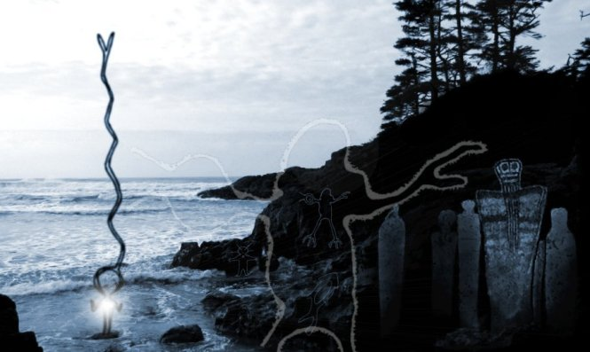
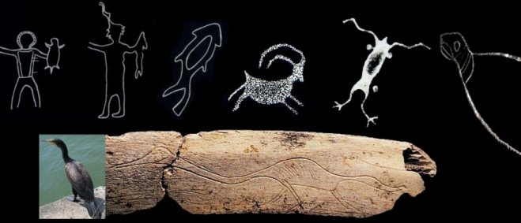
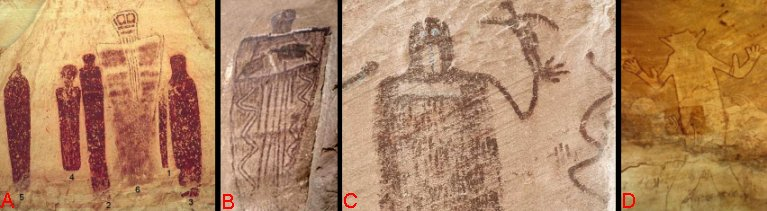
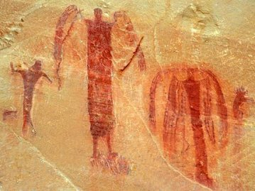
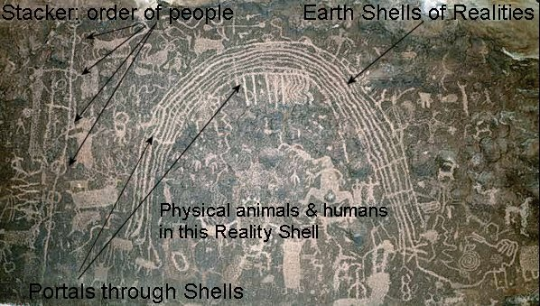
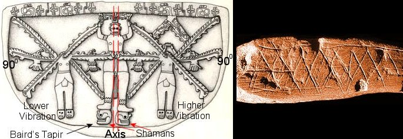
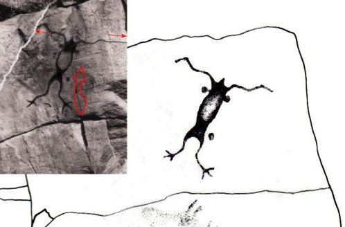

|  |
|
Page 14
Many
people are trying to understand what
petroglyphs
sites
represent. These sites can be found all around the planet and are
understood to be up to tens of thousands years old in some cases. To
understand what their function was we need to establish a direction of
thought.
The first step is to recognize that most if not all of these sites were
created by shamans. If you don’t agree with this then the answer would
be - they are just ancient graffiti (that’s no joke, as there are some
misguided academics that think this way). If you agree they were created
by shamans then it is logical to recognize that the rock art is a
recording of a shaman’s work or experience.
Here lies the problem, if you are not a practicing
shaman you will never recognize the language of the teaching. The truth
is without experience in the nonphysical realities there is no
way someone could ever understand what has been experienced. The only
ones that have the right to comment on what the cave and rock drawings
are, is the practicing shaman. This is the only credential that counts
in the interpretation of the meanings. Intellectual based
interpretations are at the best, a guess.
From
my research into various
petroglyphs
there appears to be two general categories of rock recordings.
The first is an account of a personal journey by a shaman, which can
only be of interest to that shaman’s personal development.
The second type is a recording of a universal
connection. This connection is to universal consciousness and that is a
source that all have the ability to connect to. In other words this type
of recoding is a teaching map for others to follow. This can be for
healing (balance) or teaching of acquired knowledge. All understandings
and knowledge from the past, present, and future are available here.
There are no exceptions but there are limiting abilities. The ability to
connect to unlimited universal knowledge is centered in the self limited
profile of the person asking. Every human on this planet is culturally
bound in one depth or another. The more we understand our reality, based
on intellectual cultural teachings, the less likely we will be able to
fully connect to the universal mind.
Below
are a series of pictures with captions of what the drawings represent to
the individual shaman that created it. The captions are direct
translations of the event and originate from the nonphysical aspects of
the artist. I did not spend a lot of time with each picture during my
session so if anyone wants more information about any of the
petroglyphs
they can follow up where I left off. This can be accomplished by giving
more interest to the event than I did, or better yet, being at the site
itself to absorb the energy.
|
|
 To some shamans an animal form was the carrier of their consciousness. There is no difference but their is a duality of realities, be it air to water or water to air as seen in the beaver, fish, frog or seal. Medicine bags held in the left hand is a combined energy of the bag and the contents. the bag in the two above comes from a “duality animal” and was a tool of great interruptive power for them. It was their protection, guide, and way of getting out of a situation that needed exiting. Both are reaching out with their “shire” in the medicine bag. The on the right shows this ability or power in the holding of the fish shape and the connection out of the crown chakra. |
|
Rock Art can be found all around the world, and one of the main themes
is the Dorajuadoik styles being.
Interaction with the
Dorajuadoik
have been experienced by many shamans and on many
different levels. This as you know, is all an interpretation within the
shaman’s individual perspectives and belief systems. Hank Wesselman
assigned this name to a being that resides in realities lowest levels
(see article for more). In the Rock Art world you will see the
variations of this theme but they are all the same entity. Not to get
too complicated here, these different styled Dorajuadoiks are also real
entities, but have different capacities depending on the angular flow
towards this level. The style of image also becomes a co-creation of the
shamans observational perception and the angle of flow towards this
level of reality. In the below diagram “A B C” are all from the Barrier
Canyon complex on the Colorado Plateau and “D” is from
Tassili National Park, Algeria. In my work with the pictographs I have
been shown parts of the process and some of the experiences that the
artists are portraying. On the left “A” diagram it shows the teachers
experience (large center one) and the students that followed record
their experience as part of the group knowledge. In “B” the shaman is
demonstrating the energy flow (snake shape and central axis flow at
center of body) with the power animals being the guides to the
experience. In “C” the energy felt is shown by a lightning bolt in the
mouth. The bird in hand demonstrated the OBE. In “D” you can see a
common theme in arm positioning. (No it’s not an alien!) Most
petroglyphs show the Mudra or body position to connect to the desired
energies and the proper angle of exit into specific realities. They are
all maps to certain “terrains” in the nonphysical. For on mudras with
this type of work see “Ecstatic Body Postures” by Belinda Gore.

The Petroglyph below is from South Western USA and
shows the workers at this site have achieved the highest semi physical
experience possible. It is the opposite direction of the Dorajuadoik or
towards the higher vibrational realities. This shaman’s introductory
stage is represented in the figure to the left. As time and experience
in these realms expanded the connection became more experiential or into
the consciousness spectrum. This can be seen in the middle figure,
followed in time by the last one to the right. You can see the
progression of complexity as the shaman’s vibration began to match that
of the contact entity. The shaman’s vision is now entering into a wider
value of the energy that is supporting the experience. The right side is
the completion of this one’s work. In the right side one, the shaman has
drawn shells of energy and the top of a complete orb that surrounds the
entity. The “wings” of “angels” are the energy flow connections to
different vibrational reality shells. The word Shells in this context is
a very complex understanding that evolves time, realities, and all
physical creations. It has yet to be recognized by the academic world.

Below is a diagram of Earth Shells (a very complex
teaching that will have to wait for a book as it would take more than
this website has room for). On the left of the picture is a line with
some circles on it. This was referred to as a stacker and I was informed
that it represented the order of North American people at that time
period. These shamans are seeing the connections to different peoples,
Earth, its Shells, animals, and Time Shells – they are connecting in
very deep ways. (All realities are composite of layered vibrational
shells as can be seen in the center “jawbreaker” diagram).

A great a site on other US Petroglyphs:
http://www.jqjacobs.net/rock_art/index.html
|

The “Olmec” pictograph to the left is form an older culture (that I will
not comment on in this website). It comes from a very advanced shamanic
order or what we would call a religion. The diamond pattern is too
advanced a teaching to get into here, but it is the true design of the
universe, from the galaxies to the atom itself. This pattern can be seen
in petroglyph sites all around the planet as it is the basic structural
design of the physical universe – diagram to the right is from the
Blombos Cave in South Africa and has been dated at 70,000 BP.
Back to the left diagram, the center figure is of a
balance physical representation with the nonphysical aspects of creation
to its sides – higher vibratory aspect on one side and the lower
vibratory level of oneself on the other side. Each creates the push pull
of center balance and ascension. In all orbs there is a central flow or
axis (see book Schematic of God for introduction). Also, in all orbs
there is an event horizon that runs at 90 degrees. The event horizon and
axis create the 8 pack (8 smaller orbs) or inner orb structure. It is at
the center of the axis crossing with the event horizon that octahedron
is formed. The physical reality is a creation of this octahedron
structure and with its energetic shape, the organization of all of the
elements that form physical. This 90 degree event horizon is a balance
state of flowing energy as represented by the birds in fight symbol.
Birds in fight are a balance between realities or the capacity to “float
above” the physical restrictions of earth. The central figure has the
axis energy flow, as see in comparison with the garments of the three
figures. The main or central
figure is standing on two Braid’s Tapir heads, a sign of the shaman. The
Tapir is capable of walking on the bottom of a flowing river or on dry
land, a powerful symbol of being able to live in two realities.
For practising shamans: To create a bond with the
artwork - look into the eye(s) and focus here as this was the center
focal point of the artist. Meditate with eyes open or closed - with the
pictograph eye in your mind, connecting to teaching. Also, only use
photos or the real site as drawings are of little value.
Nanaimo, BC, Canada
 Sassaginnigak Lake, Manitoba, Canada
The above pictograph is a classic reason why one should
not do shamanic work from a drawing. The photo overlay on the left is
represented by a modern sketch on the right. This sketch was done to
preserve the rock art and was published in a Manitoba archaeological
publication. Unfortunately the artist is not a shaman as they would
recognise the quartz vein to the left of the frog figure. This vein was
is a source of power for the figure as seen by the energy tentacle
coming from it. The rock cracks are also used as entrances and exist
from realities. Without these things being recognized behind and to the
sides of the painting only half the information is recorded. Use only
the photos as the drawings are a waste of time, and that doesn’t include
the encapsulated energy of the image.
Taken from Don’s Maps Website:
"Like bemused gallery goers, Clottes's team spends long hours
staring at a painting and asking, what - does it mean? One clue comes
from how the images are integrated into the walls. In the "Goldilocks"
chamber, the missing hindquarters of a cave bear drawn in red ochre seem
to lie within rather than on the rock. "The bear seems to come out of
the wall," says Clottes. And last week Clottes's team discovered two
painted ibexes in the same chamber. The horns of one are actually
cracks in the wall which the artist scraped and enlarged.
"To these people's way of thinking, those animal spirits were in the
walls," says Clottes. Painting them, the artists may have believed,
allowed the power within to seep into the real world.
|
The frustrations in science:
From The New Scientist, 15 April 2003
"There is good reason to doubt chronologies based purely on style,
admits Chris Witcombe, an art historian at Sweet Briar College in
Virginia. He explains the difficulty with an analogy: "Imagine you are
living in the distant future and only two objects survive from a lost
and forgotten past: a painting by Picasso and a painting by
Michelangelo. Which is the earlier work and which the later?"
But archaeologists must also be wary of radiocarbon dates, argue Pettitt
and Bahn in a paper that appeared in Antiquity last month. Bahn's
suspicions were aroused when he translated the latest coffee-table book
on the Chauvet cave into English. Around 30 radiocarbon ages are
presented in this book, but the measurements were all made at the same
French laboratory. Using results from only one team, however skilled,
just is not scientific, says Bahn.
Worse, the same laboratory is currently embroiled in an argument over
the age of the artwork in another cave, Candamo in Spain. They dated
black dots on its walls to 30,000 years ago, but Geochron Laboratories
in Cambridge, Massachusetts, estimated the age of a second sample to be
just half that.
The point is that carbon dating rock art is difficult. Because the
samples tend to be incredibly tiny, it is difficult to measure the
number of carbon-14 atoms relative to other carbon isotopes - the key
ratio for pinning down the age.
"Everybody agrees there are problems," says Marvin Rowe, who heads a
radiocarbon-dating lab at Texas A&M University in College Station.
Contamination from groundwater or rock scrapings may further confuse the
results."
|
|
|